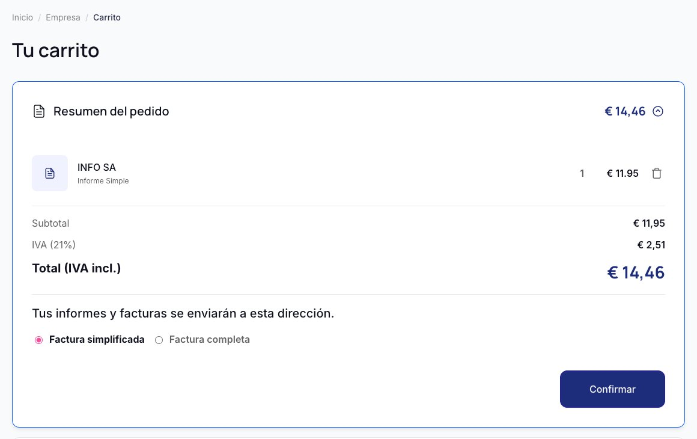
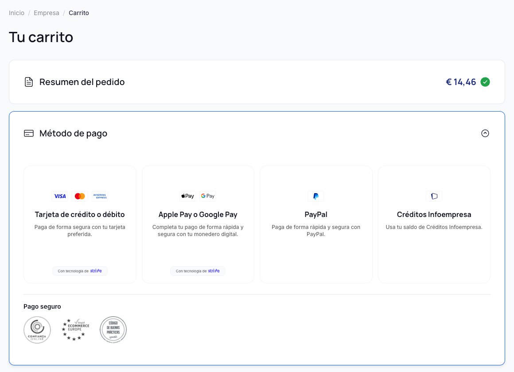

One checkout page instead of several
Every extra step before payment was a chance to drop off, but people still needed to review what they were buying.
Why
Fewer steps means less drop-off, and showing everything upfront means no surprises at the end.
Trade-off
A denser page. I split it into an order section and a payment section that open one at a time, so everything stays on one page without feeling crowded.
Fig. 03Live: order summary, VAT and invoice type on one card


Fig. 04Live: four payment options, with trust seals below

